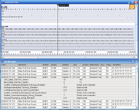

User-centered Development of a Visual Exploration System for In-Car Communication

Venue. SG (2009)
Authors. Michael Sedlmair, Benjamin Kunze, Wolfgang Hintermaier, Andreas Butz
Abstract. Modern premium automobiles are equipped with an increasing number of Electronic Control Units (ECUs). These ECUs are interconnected and form a complex network to provide a wide range of advanced vehicle functionality. Analyzing the flow of messages in this network and tracking down problems has become a major challenge for automotive engineers. By observing their working practices, we found that the tools they currently use are mostly text-based and largely fail to provide correlations among the enormous amount of data. We established requirements for a more appropriate (visual) tool set. We followed a user-centered approach to design several visualizations for in-car communication processes, each with a clear purpose and application scenario. Then we used low-fidelity prototypes to evaluate our ideas and to identify the “working” designs. Based on this selection, we finally implemented a prototype and conducted an expert evaluation which revealed the emergence of a novel mental model for thinking about and discussing in-car communication processes.